Home
Shells
(current)
Shop
(current)
About me
(current)
SHELL'S CATEGORY
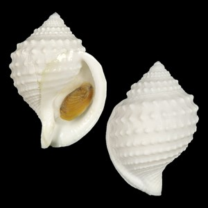
Cassidae
Mainly subtropical and tropical species. When collected, most cassidae are quite clean.
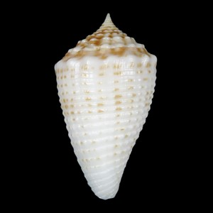
Conidae
This is one of the precious families and second to the Cypraeidae in popularity.
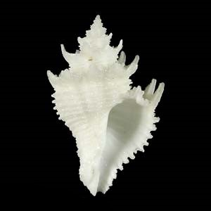
Coralliophilidae
A superb family because of the many spiny beauties of the genus Latiaxis. Often living in deep water.
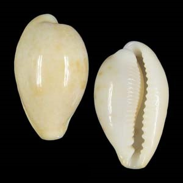
Cypraeidae
Most popular of all families, mainly because the shells are glossy, often brightly coloured and pleasant to touch.
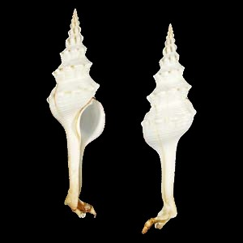
Fasciolariidae
Most FASCIOLARIIDAE are quite large, and some of the members grow to the gigantic size of over 60 cm.
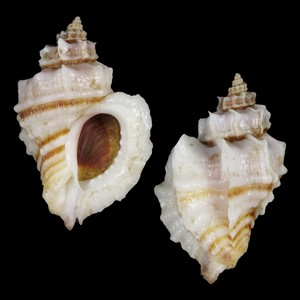
Muricidae
Muricidae belong to the precious families because part of the family has superb spines or combines pastel colours with intricate shapes.
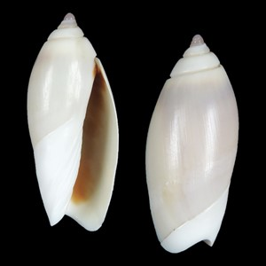
Olividae
A semi-precious family with about 400 species, subspecies and forms.
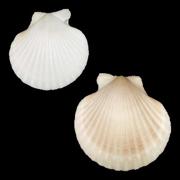
Pectinidae
Scallops are the most popular family in bivalves.About 270 species, Their colours are outstanding.
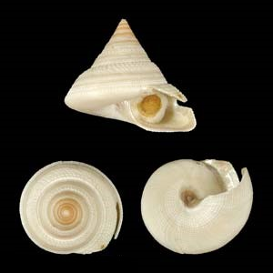
Pleurotomariidae
The most exclusive family of shells. Apart from P. beyrichii all of them live deeper than 100 m.
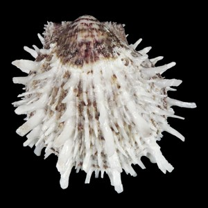
Spondylidae
Together with the Pectinidae the most popular group in Bivalves. Spondylidae need a lot of cleaning. About 60 species.
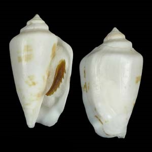
Strombidae
A semi-precious family and now one of the most popular ones.
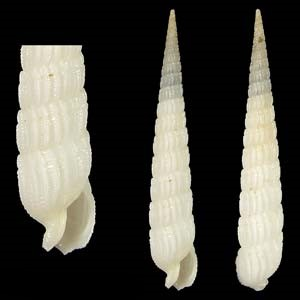
Terebridae
Terebridae are not variable in shape: they are all slender and pointed.
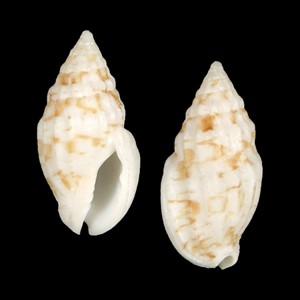
Volutidae
Volutidae have exquisite shapes and select colours. There are about 280 species